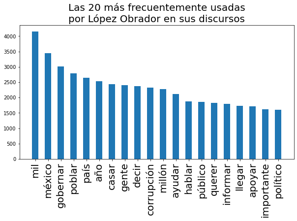

Introducción al análisis de texto
¿Alguna vez has querido analizar texto? en este post voy a tratar de explicar cuáles son los primeros pasos recomendados para comenzar cualquier proyecto que involucre texto y ciencia de datos.
Texto como datos
Seguramente ya habrás escuchado algunas veces, o tu mismo has dicho “Hey Google” o “Hey Siri”, o tal vez te le has echado un ojo a tu filtro de spam… pero ¿te has preguntado cómo es que funcionan estos sistemas? como ya te imaginarás, la mayoría son aplicaciones de aprendizaje automático (o machine learning) que son posibles gracias a muchos de los algoritmos tradicionales del aprendizaje máquina.
Sin embargo, no podemos nosotros simplemente agarrar un montón de texto y dárselo a un algoritmo y esperar a que haga su magia… antes de todo esto existe un proceso que les voy a describir a continuación.
spaCy
Aquí es donde entra spaCy, que es un paquete de Python que podríamos comparar con una navaja suiza para el procesamiento de texto. Esta es una herramienta muy poderosa, y aquí solamente vamos a tocar apenas la superficie de lo que ofrece. Para comenzar, hay que instalarlo:
pip install spacy
Instalar spaCy es solo la primera parte del rompecabezas, puesto que su correcto funcionamiento depende de usar el modelo adecuado para la tarea (y el idioma) que vamos a realizar, aquí puedes encontrar una descripción de los modelos, pero para este post, podemos usar el más simple es_core_news_sm, se descarga con estos comandos en la consola:
python -m spacy download es_core_news_sm
python -m spacy link es_core_news_sm es
Para acceder dentro de Python a todas las bondades de nuestra nueva herramienta, es necesario cargar el modelo, es convención cargar el modelo en una variable llamada nlp:
import spacy
nlp = spacy.load("es")
Y listo, por el momento podemos seguir.
Tokenización
El primer paso es segmentar nuestro texto en tokens. Un token es un conjunto de caracteres que representan texto. También podemos decir que el token es la únidad análisis de texto, así como un número es la unidad del análisis matemático. Es fácil para nosotros pensar que un token es igual a una palabra, sin embargo esto no es correcto, puesto que la “palabra” es un elemento del lenguaje que posee significado por sí misma, mientras que el token se supone es un elemento abstracto. Dependiendo de la tarea que estemos afrontando, el token puede ser alguna de las siguientes:
- Una sola palabra, como: “jóvenes”, “nivel” o “superior”,
- Un número, como: “1”, “0”, o “10”,
- Un solo caracter, como: “j”, “ó” o “v”,
- Un símbolo, como “¿”, “?” o “#”,
- Un conjunto de caracteres, como “nivel superior” o “escuela técnica”
La forma de elegir los tokens en nuestro texto va a depender muchísimo del problema que estemos afrontando, habrá ocasiones en las que una simple tokenización, como la de dividir nuestro texto por los espacios, bastará:
text = "Seguramente ya habrás escuchado algunas veces, o tu mismo has dicho \"Hey Google\" o \"Hey Siri\", o tal vez le has echado un ojo a tu filtro de spam..."
simple_tokens = text.split(" ")
print([token for token in simple_tokens])
['Seguramente', 'ya', 'habrás', 'escuchado', 'algunas', 'veces,', 'o', 'tu', 'mismo', 'has', 'dicho', '"Hey', 'Google"', 'o', '"Hey', 'Siri",', 'o', 'tal', 'vez', 'le', 'has', 'echado', 'un', 'ojo', 'a', 'tu', 'filtro', 'de', 'spam...']
Pero habrá otras ocasiones en las que tengamos que echar mano de otras formas de tokenizar el texto, por ejemplo en el paquete spaCy podemos echar mano de algunas herramientas.
document = nlp(text)
print([token for token in document])
[Seguramente, ya, habrás, escuchado, algunas, veces, ,, o, tu, mismo, has, dicho, ", Hey, Google, ", o, ", Hey, Siri, ", ,, o, tal, vez, le, has, echado, un, ojo, a, tu, filtro, de, spam, ...]
La gran diferencia es que en la segunda tokenización los símbolos de puntuación están separadas de las palabras en el texto.
spaCy: Cuando llamamos
nlp("algún texto")obtenemos como retorno un valor del tipoDocument, que, a su vez está compuesto de valores del tipoToken, es por eso que podemos iterar nuestro documento con un ciclo for.
Reducción de tokens
¿Minúsculas? ¿mayúsculas?
Hasta este punto todo bien con nuestros tokens, pero piensa en una oración como:
oracion = "El ciclo escolar comienza en las escuelas. Escuelas de todo el país comenzarán clases este lunes."
Los tokens únicos de esta oración son:
oracion_parsed = nlp(oracion)
set((token.text for token in oracion ))
{'clases', 'El', 'las', 'en', 'todo', 'comenzarán', 'este', 'ciclo', 'escolar', 'comienza', 'escuelas', '.', 'el', 'lunes', 'Escuelas', 'país', 'de'}
Si te das cuenta, “Escuelas” y “escuelas” son dos tokens distintos, (recuerda, los tokens no son palabras); sin embargo, para muchas aplicaciones, estos dos tokens pueden, simple y sencillamente ser tratados como el mismo, simplemente con transformar todos nuestros tokens a minúsculas. Usamos la propiedad lower_ de Token para acceder a la versión en minúscula de la palabra:
set((token.lower_ for token in oracion_parsed))
{'país', 'lunes', 'comenzarán', 'en', '.', 'el', 'comienza', 'de', 'ciclo', 'las', 'escolar', 'clases', 'este', 'todo', 'escuelas'}
spaCy: como ya sabemos, en nuestro ejemplo de código anterior, cuando iteramos sobre
oracion_parsed, obtenemos uno a uno los tokens que forman nuestro documento original. Cada uno de estos elementos de la claseTokenposee muchas propiedades, de entre ellaslower_es una.
¿Stopwords? ¿Signos de puntuación?
Como resultado de la tokenización, en el ejemplo anterior vemos que existen muchos tokens que, dependiendo del análisis que vayamos a realizar, podemos considerar “irrelevantes” para nuestro análisis, por ejemplo, las palabras “en”, “este”, “el” y “las” ya que son muy comunes en el español y están destinadas a aparecer en todas las oraciones, sin importar el tema al que estas hagan referencia. Estas palabras en inglés son conocidas como “stopwords”. Para encontrarlas con spaCy podemos usar la propiedad is_stop de cada token:
[f"{token.lower_}: {token.is_stop}" for token in oracion_parsed]
['el: True', 'ciclo: False', 'escolar: False', 'comienza: False', 'en: True', 'las: True', 'escuelas: False', '.: False', 'escuelas: False', 'de: True', 'todo: True', 'el: True', 'país: False', 'comenzarán: False', 'clases: False', 'este: True', 'lunes: False', '.: False']
Al igual que las stopwords puede ser que los símbolos carezcan de relevancia en nuestro análisis, nuevamente, por ser considerados como una ocurrencia común en el español. Para encontrarlos, podemos hacer uso de la propiedad is_punct:
[f"{token.lower_}: {token.is_punct}" for token in oracion_parsed]
['el: False', 'ciclo: False', 'escolar: False', 'comienza: False', 'en: False', 'las: False', 'escuelas: False', '.: True', 'escuelas: False', 'de: False', 'todo: False', 'el: False', 'país: False', 'comenzarán: False', 'clases: False', 'este: False', 'lunes: False', '.: True']
Lematización
Otro procedimiento que podemos usar para reducir la cantidad de tokens únicos es el proceso de lematización, que es un proceso lingüístico que consiste en, dada una forma flexionada, hallar el lema correspondiente. El lema es la forma que por convenio se acepta como representante de todas las formas flexionadas de una misma palabra… pero creo que es mejor con algunos ejemplos:
- comienza -> comenzar
- comenzarán -> comenzar
- clases -> clase
set((token.lemma_.lower() for token in oracion))
{'país', 'lunes', 'en', '.', 'el', 'los', 'de', 'escolar', 'clase', 'este', 'ciclar', 'comenzar', 'escuela', 'todo', 'escuelas'}
Stemming - Acortamiento (?)
Existe otra forma de reducir el número de tokens. Y es conocida como stemming en inglés, en español yo lo traduciría como “acortamiento” o “poda (de podar el césped)”. Este proceso consiste en simple y llanamente recortar las palabras para reduciras a una base común:
- comienza -> comienz
- comenzarán -> comenz
- clases -> clas
from nltk.stem.snowball import SnowballStemmer
stemmer = SnowballStemmer(language='spanish')
set((stemmer.stem(token.text) for token in oracion)))
{'escol', 'en', 'comienz', 'el', '.', 'de', 'comenz', 'las', 'lun', 'pais', 'este', 'clas', 'tod', 'cicl', 'escuel'}
spaCy: por increíble que parezca, esta poderosa librería no cuenta con la opción de ejecutar stemming por default, las razones son varias y trataré de hablar sobre ellas más adelante, pero por ahora, si quieres realizar stemming, el paquete NLTK es tu aliado.
Preguntas más comunes
¿Lematización o stemming?
Estas dos técnicas son consideradas mutuamente exclusivas, puesto que o aplicas una o aplicas la otra, nunca las dos. Pero, ¿cuál es la más recomendada?
En general siempre se prefiere la lematización, puesto que es un buen compromiso entre reducir la cantidad de tokens y preservar un poco más la composición original de estos. El stemming al ser más agresivo tiende a conllevar una pérdida de información más grande.
¿Cuál es el orden en que se aplican los pasos?
Es común que después de tokenizar el texto, los pasos se apliquen en el orden presentado:
- Conversión a minúsculas
- Eliminación de stopwords y símbolos de puntuación
- Lematización o stemming
Siempre es muy importante realizar el proceso de eliminación de stopwords antes de transformar los tokens, puesto que de otro modo puede que el proceso de transformación convierta “accidentalmente” nuestros tokens útiles en stopwords y esto nos lleve a perder información valiosa de nuestro dataset.
¿Por qué querríamos “reducir” la cantidad de información mediante estas transformaciones?
La idea detrás de la eliminación de stopwords, símbolos, la lematización o stemming radica en reducir la cantidad de elementos únicos en nuestro dataset, con el objetivo de incrementar el desempeño de nuestro algoritmo de dos maneras:
El eliminar las stopwords nos ayuda a elminiar palabras comunes que tienen poco valor discriminativo entre textos. Así mismo, para muchos problemas no necesitamos conocer el tiempo en el que un verbo estaba escrito, o si la palabra era “corrupto” o “corrupción”; con las formas base el algoritmo puede “aprender” una idea general.
Esta misma idea se puede aplicar para tokens muy raros dentro de nuestro texto… podríamos eliminar tokens que no aparezcan más de $X$ cantidad de veces, bajo la sospecha de que tal vez fueron errores ortográficos o palabras sin importancia.
Si tienes más dudas o comentarios, no olvides hacérmelas llegar a través de los comentarios en esta página, o, para mayor seguridad, a mi cuenta de Twitter @io_exception
¿Y las visualizaciones?
Para no fallarle al público de Tacos de Datos, vamos a hacer una sencillísima visualización con las palabras que más frecuente usa el presidente mexicano en sus conferencias (ojo, acá no vamos a hablar de política). Y de paso aprovecho para presentarles un dataset que estoy manteniendo en Kaggle, en el cual coloco más o menos semanalmente todas las versiones estenográficas de las conferencias que publica la presidencia de México. Puedes acceder al dataset aquí Conferencias Mañaneras:
El primer paso es crear una función que nos ayude a tokenizar texto, esta es una función que debemos conservar, ya que si en el futuro queremos repetir nuestros experimentos, debemos usar la misma forma de tokenizar para que exista consistencia en nuestros resultados.
from nltk.corpus import stopwords
spanish_stopwords = set(stopwords.words('spanish'))
def tokenize_phrase(phrase):
parsed_phrase = nlp(phrase)
for token in parsed_phrase:
if token.is_punct or token.is_stop or token.text.lower() in spanish_stopwords:
continue
yield token.lemma_.lower()
Después, con todas nuestras frases cargadas en el arreglo lopez_obrador rellenamos un Counter:
from collections import Counter
word_counter = Counter()
for amlo_phrase in lopez_obrador:
word_counter.update(tokenize_phrase(amlo_phrase))
Una vez que tenemos el objeto word_counter con los valores, podemos graficarlo:
import numpy as np
import matplotlib.pyplot as plt
fig = plt.figure(figsize=(10,5))
ax = fig.gca()
labels, values = zip(*word_counter.most_common(20))
indexes = np.arange(len(labels))
width = 1
ax.bar(indexes, values, 0.5)
ax.set_xticks(indexes)
ax.set_xticklabels( labels, rotation=90, fontsize=20)
ax.set_title("Las 20 más frecuentemente usadas\npor López Obrador en sus discursos", fontsize=20)
plt.show()

Algunas cosas esperadas y otras no tanto: habrá que ver por qué se la pasa diciendo “mil” y “casar”… habrá que ver también si estas palabras no son sino las formas base de otras que tal vez hagan más sentido (puede que al lematizar nuestros tokens estemos perdiendo esta información). Como dije, esto es solo el comienzo del análisis de texto, ¡aún falta mucho por aprender!
Si tienes alguna duda con lo presentado en este post, repito: pregúntame por Twitter en @io_exception.
Subscríbete a 🌮 tacos de datos | Aprende visualización de datos en español.
Recibe las mejores publicaciones directamente a tu caja de entrada